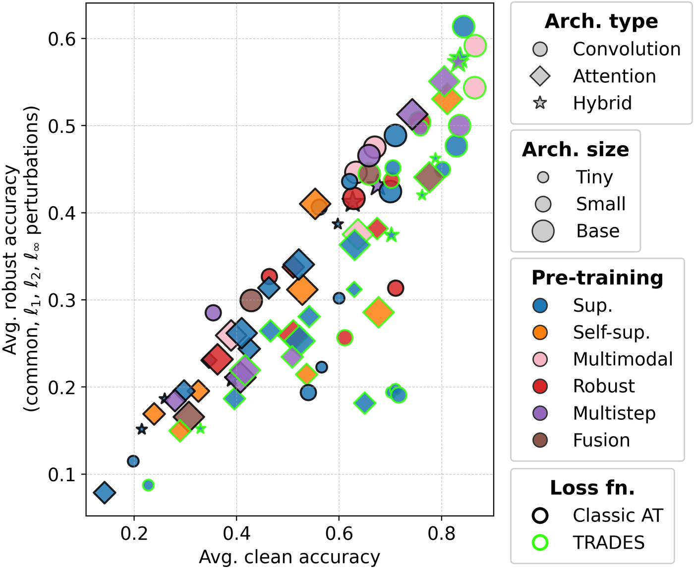
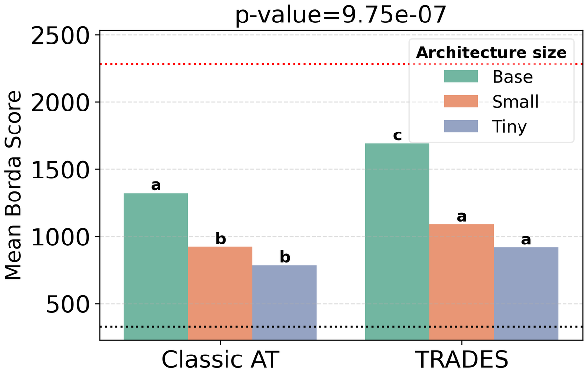
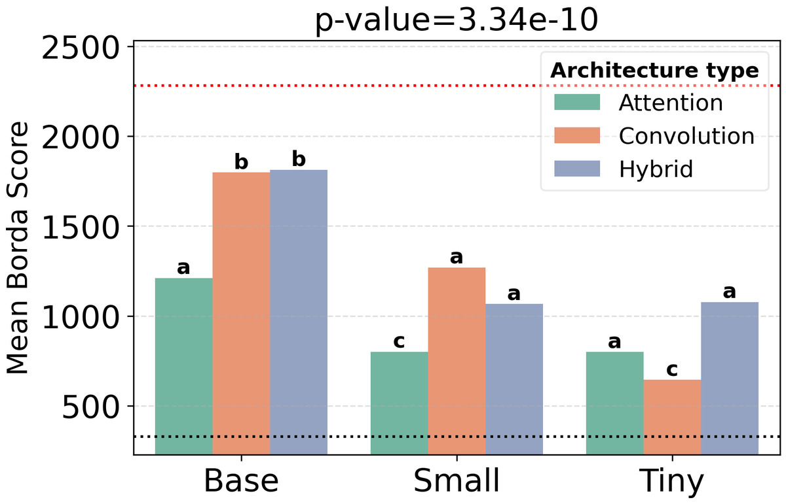
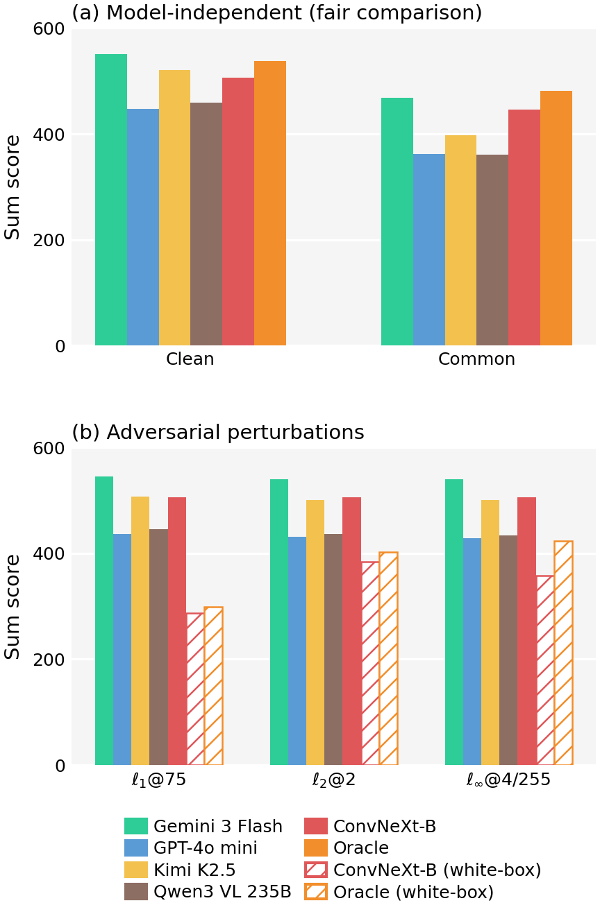

Abstract
Robust generalization in the imaging domain, i.e., how models perform across diverse perturbation settings, is poorly understood for modern classification techniques such as robust fine-tuning from pretrained backbones and zero-shot classification with vision-enabled large language models (Ve-LLMs). We introduce RobustGenBench, a standardized benchmark of six classification datasets with reproducible evaluation splits and a unified perturbation protocol covering adversarial (ℓ1, ℓ2, ℓ∞) and common perturbations. It releases a corpus of pre-computed adversarial images transferred from open-weight VLM surrogates, enabling black-box robustness evaluation of any model, including API-only systems, without GPU access. Using RobustGenBench, we conduct one of the most comprehensive studies of robust fine-tuning to date (40 pretrained backbones, 2 robust losses, and 3 adaptation protocols, yielding 7,200 robustness measurements). Convolutional architectures with TRADES perform best at base scale, the advantage of TRADES over Classic AT widens as size grows, and hybrid architectures unlock competitive robust generalization. We further evaluate four Ve-LLMs from four providers: the strongest rivals robustly fine-tuned vision models on clean and common perturbations, and all are least affected by transferred ℓ1 perturbations, the hardest setting for vision models under white-box attacks. By evaluating both modeling techniques on the same tasks and perturbation settings, RobustGenBench provides a unifying view of robust generalization.
The benchmark
Datasets
| Dataset | Domain | Classes | Test |
|---|---|---|---|
| Caltech-101 | objects, coarse | 101 | 1,000 |
| FGVC-Aircraft | aircraft, fine | 100 | 1,000 |
| Flowers-102 | flowers, fine | 102 | 1,000 |
| Oxford-IIIT Pet | pets, fine | 37 | 1,000 |
| Stanford Cars | cars, fine | 196 | 1,000 |
| UC Merced Land Use | satellite, coarse | 21 | 420 |
Fixed splits, 224×224 images, test sets capped at 1,000 images: evaluation cost depends only on the model.
Perturbation settings
- Common corruptions: 11 types (noise, blur, weather, digital) at severity 3. Model-independent.
- Adversarial: ℓ1, ℓ2, ℓ∞-bounded, full AutoAttack ensemble.
- Vision models (white-box): ε1 = 75, ε2 = 2, ε∞ = 4/255.
- Black-box models (transfer): adds ε1 = 300, ε2 = 8, ε∞ ∈ {8, 30}/255, crafted on 5 open-weight VLM surrogates (CLIP, MetaCLIP, SigLIP2).
- Metrics: Sum score (absolute, pool-independent), Borda score (rank consistency), and Mean Absolute Correlation (how uniformly robustness transfers across settings).
Study 1: robust fine-tuning of vision models
We fine-tune 40 pretrained backbones (19 architectures; convolutional, attention-based, and hybrid; tiny to base size; 6 pre-training protocols) with Classic AT and TRADES under three protocols (full fine-tuning for 50 or 5 epochs, linear probing).

Key findings
- Convolutional + TRADES leads. ConvNeXt-B (supervised ImageNet-22k) with TRADES is the best configuration overall, with a sum score of 19.79 out of 30: the benchmark is far from saturated.
- TRADES beats Classic AT, increasingly so at scale. The advantage holds at every size and widens from tiny to base architectures.
- Hybrid architectures generalize most uniformly. They reach the highest MAC, and at tiny size they are the best option.
- Robust pre-training shines under constrained protocols (5-epoch fine-tuning, linear probing), but gains little from scaling small to base.


Top configurations (FFT-50)
| # | Backbone | Type | Pre-training | Loss | Sum score |
|---|---|---|---|---|---|
| 1 | convnext_b,sup,in22k | convolutional | supervised | TRADES | 19.79 |
| 2 | convnext_b,clip,laion2b | convolutional | multimodal | TRADES | 19.40 |
| 3 | coatnet_2,sup,in12k | hybrid | supervised | TRADES | 18.87 |
| 4 | coatnet_2,sup,in12k-in1k | hybrid | multistep | TRADES | 18.74 |
| 5 | convnext_b,clip,laiona | convolutional | multimodal | TRADES | 18.24 |
Full leaderboards for all three protocols: robustgenbench.reference() in the code release.
Study 2: vision-enabled LLMs
We evaluate GPT-4o mini, Gemini 3 Flash, Kimi K2.5, and Qwen3 VL 235B as zero-shot classifiers through their APIs, under transfer attacks from open-weight VLM surrogates.
| Model | Clean | Common | ℓ1@300 | ℓ∞@30/255 |
|---|---|---|---|---|
| Gemini 3 Flash | 91.8 | 78.1 | 89.6 | 59.8 |
| Kimi K2.5 | 86.8 | 66.4 | 81.1 | 33.9 |
| Qwen3 VL 235B | 76.4 | 60.1 | 70.5 | 32.4 |
| GPT-4o mini | 74.6 | 60.4 | 69.8 | 36.4 |
Accuracy (%) averaged over datasets; adversarial columns use the strongest surrogate per dataset.
Key findings
- Standard budgets barely affect Ve-LLMs. At ε∞ = 4/255 drops stay within a few points; higher intensities are needed to stress-test them.
- ℓ1 is the least damaging norm for every Ve-LLM (2–6 points lost at ℓ1@300 vs. 32–53 at ℓ∞@30/255), while it is the hardest one for vision models under white-box attacks.
- The best surrogate depends on the target. SigLIP2 transfers best to Gemini and GPT-4o mini, CLIP ViT-H/14 to Kimi and Qwen.

Evaluate your model
The robustgenbench package connects any model to the benchmark and ranks it against the paper's results.
A vision-enabled LLM (any OpenAI-compatible API)
pip install -e ".[vlm]"
robustgenbench eval-vlm --model gpt-4o-mini
robustgenbench leaderboard results.jsonl --compare vellmAny black-box model
import robustgenbench as rgb
class MyModel(rgb.BlackBoxClassifier):
def predict(self, image, class_names):
return my_model(image, class_names) # class name or index
results = rgb.evaluate_classifier(MyModel(), "my-model")A PyTorch classifier (white-box AutoAttack)
from robustgenbench.vision import evaluate_model
results = evaluate_model(
None, "my-convnext",
model_for_dataset=lambda d, _: load_my_model(d))
print(rgb.leaderboard(results, compare_with="fft50"))Just the data
from datasets import load_dataset
repo = "legolasflagstaff/RobustGenBench"
test = load_dataset(repo, "flowers-102", split="test")
adv = load_dataset(repo, "flowers-102-clip_vith14",
split="linf_30")Perturbations across datasets
The same test image under each perturbation (surrogate: CLIP ViT-H/14).
| Setting | Caltech-101 | Aircraft | Flowers | Pet | Cars | UC Merced |
|---|
Citation
@inproceedings{heuillet2026robustgenbench,
title = {RobustGenBench: A Benchmark for Robust Generalization to Adversarial and Common Perturbations, with Applications to Vision and Vision-Enabled Large Language Models},
author = {Heuillet, Maxime and Ngnaw{\'e}, Jonas and Pequignot, Yann and Bhagwatkar, Rishika and Larouche, Alexandre and Gagn{\'e}, Christian and Rish, Irina and Ahmad, Ola and Durand, Audrey},
booktitle = {The Fortieth Annual Conference on Neural Information Processing Systems Evaluations and Datasets Track},
url = {https://openreview.net/forum?id=KDsuVST8by},
year = {2026}
}